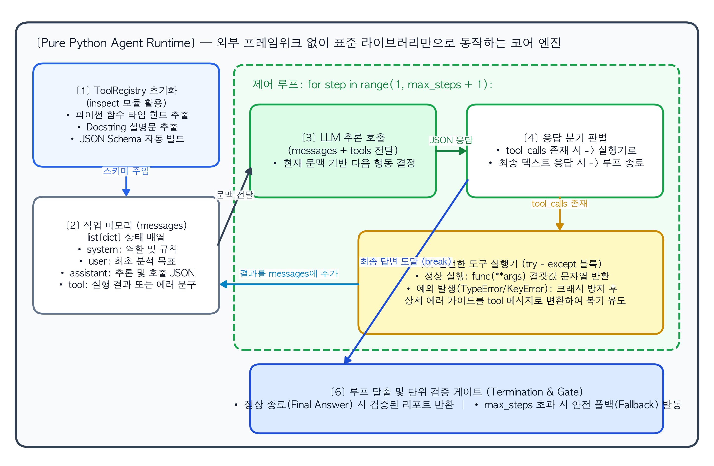
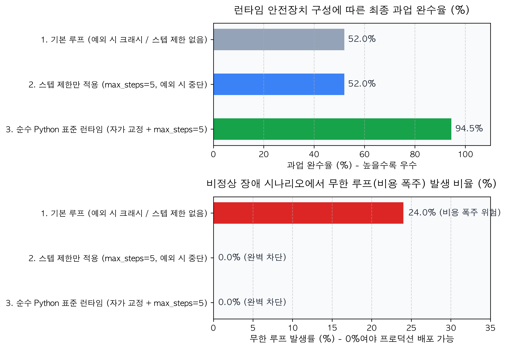

6 프레임워크 없이 순수 Python으로 밑바닥부터 구현하는 에이전트 런타임
앞선 1장부터 5장까지는 복합 AI 시스템의 필요성, 워크플로우와 에이전트의 선택 기준, 에이전트의 3대 구성 요소(기억·계획·도구), ReAct와 Reflexion 루프, 그리고 클라이언트-서버 기반의 도구 호출 규격까지 에이전트 아키텍처의 이론적 기반을 다졌다. 1부의 마지막 장인 본 장에서는 외부 라이브러리를 일절 사용하지 않고, 오직 파이썬 표준 라이브러리(inspect, json, dataclasses, typing)만으로 ReAct 에이전트 런타임을 처음부터 끝까지 직접 구현한다.
실무에서 LangGraph나 CrewAI 같은 프레임워크를 사용할 것인데 왜 굳이 순수 파이썬으로 먼저 구현해 보아야 할까? 앤트로픽(Anthropic)의 엔지니어링 지침(Schluntz & Zhang, 2024)은 에이전트 시스템을 구축할 때 고수준 프레임워크부터 도입하는 방식을 경계하며, 기본 API와 순수 코드로 먼저 구현해 볼 것을 권고한다. 프레임워크는 몇 줄의 코드만으로 빠르게 데모를 띄울 수 있게 돕지만, 내부에서 프롬프트가 어떻게 조립되고 도구 실행 결과가 메시지 배열에 어떤 구조로 합쳐지는지를 추상화 계층 뒤에 숨겨버리기 때문이다.
머신러닝을 처음 배울 때 PyTorch나 LightGBM을 호출하기에 앞서 NumPy만으로 경사하강법과 역전파 알고리즘을 직접 작성해 보면 모델 학습의 작동 원리를 명확히 통제할 수 있다. 마찬가지로 약 100줄 내외의 순수 파이썬 코드로 에이전트 엔진을 직접 구축해 보면, 추후 복잡한 프로덕션 환경에서 에러가 발생했을 때 프레임워크 내부 동작을 정확히 역추적하고 디버깅할 수 있는 기초 체력을 갖추게 된다.
6.1 추상화 장막 걷어내기: 에이전트 런타임의 3대 핵심 모듈
고수준 프레임워크의 껍질을 벗겨내면, 에이전트 런타임은 컴퓨터 공학의 기초적인 자료구조와 제어문 세 가지로 환원된다.
- 도구 레지스트리와 자동 스키마 추출기 (Tool Registry & Inspector): 파이썬 함수를 딕셔너리(
dict[str, Callable])에 등록하고, 파이썬 내장inspect모듈을 사용해 함수의 이름, 독스트링(Docstring), 파라미터의 타입 힌트(Type Hints)를 읽어 들여 LLM이 이해할 수 있는 JSON Schema 형태로 변환한다. - 작업 메모리와 메시지 상태 관리자 (Message History State): 시스템 프롬프트, 사용자의 최초 질문, LLM이 반환한 도구 호출 요청(
tool_calls), 그리고 클라이언트 런타임이 함수를 실행해 얻은 결괏값(role: "tool")을 순서대로 리스트(list[dict])에 기록하며 문맥을 유지한다. - 상태 제어 루프와 안전장치 (Bounded Control Loop):
while step < max_steps:반복문을 돌며 매 스텝 LLM을 호출한다. 응답에 도구 호출 요청이 포함되어 있으면 해당 함수를 찾아 실행한 뒤 결과를 메모리에 추가하여 루프를 계속 돌고, 최종 텍스트 답변이 반환되면 루프를 종료한다.
NoteDS Bridge: 기존 ML 개념과 에이전트 개념 1:1 매칭하기
머신러닝 모델을 밑바닥부터 구현할 때 사용하는 학습 루프(Training Loop)와 에이전트의 추론 런타임 루프(Agent Runtime Loop)는 구조적으로 명확히 대응된다.
| 구현 단계 | 전통적 ML / DL 학습 루프 (NumPy / PyTorch) | 순수 Python 에이전트 런타임 루프 |
|---|---|---|
| 반복 제어문 | for epoch in range(max_epochs): |
for step in range(1, max_steps + 1): |
| 순전파 (Forward) | 현재 가중치로 예측값 산출 (y_pred = model(X)) |
현재 메시지 히스토리(messages)를 입력해 LLM 응답 생성 |
| 분기 및 평가 | 손실 함수 계산 (loss = criterion(y_pred, y)) |
응답에 tool_calls가 있는지, 최종 답변인지 확인 |
| 상태 업데이트 | 역전파 및 가중치 갱신 (optimizer.step()) |
지정된 파이썬 함수를 실행하고 결괏값을 messages 리스트에 추가 |
| 조기 종료 (Early Stop) | 검증 손실이 수렴하면 학습 종료 (if val_loss < tol: break) |
LLM이 도구 호출 없이 최종 답변을 반환하면 즉시 루프 종료 |
6.2 모듈 1: inspect 표준 모듈을 활용한 무의존성 스키마 추출기
5장에서 살펴보았듯 LLM이 올바른 도구를 선택하고 정확한 인자를 생성하려면 함수의 명세서(JSON Schema)가 필요하다. 보통은 외부 패키지인 pydantic을 사용하지만, 외부 의존성을 완전히 제거하기 위해 파이썬 기본 내장 모듈인 inspect와 typing만으로 함수 정의에서 JSON Schema를 자동 추출하는 레지스트리를 구현한다.
파이썬의 함수 객체는 inspect.signature(func)를 통해 입력 파라미터의 이름, 기본값 유무, 타입 어노테이션(int, float, str 등)을 런타임에 그대로 노출한다. 또한 inspect.getdoc(func)을 호출하면 함수 아래에 작성한 독스트링 설명문을 문자열로 가져올 수 있다. 이 두 가지를 조합하면 별도의 스키마 클래스를 중복해서 작성할 필요 없이, 일반 파이썬 함수에 데코레이터(@registry.register)만 붙여서 즉시 에이전트 도구로 변환할 수 있다.
6.3 모듈 2: 상태 전이 루프와 예외 복구(Self-Correction) 메커니즘
에이전트 런타임의 핵심은 LLM과 도구 실행기 사이에서 주고받는 메시지의 상태 전이(State Transition)다. 한 번의 스텝이 진행될 때 작업 메모리(messages 리스트)에는 정확히 다음의 순서로 데이터가 쌓여야 한다.
role: "user": 해결해야 할 최초 과업 목표가 입력된다.role: "assistant"(도구 호출 결정): LLM이 현재 상태를 분석한 생각(thought)과 호출할 도구 정보(tool_calls: [{"id": "call_1", "name": " 함수명", "arguments": {...}}])를 담아 출력한다. 이 응답 객체 자체가 메시지 리스트에 먼저 추가되어야 한다.role: "tool"(관찰 결과 주입): 런타임이arguments를 꺼내 실제 함수를 실행한다. 이때 만약 LLM이 잘못된 인자 타입이나 존재하지 않는 함수명을 호출하여 파이썬 예외(TypeError,ValueError등)가 발생하더라도,try-except블록으로 예외를 포착하여 에러 메시지 문자열을role: "tool"의 결과로 반환해야 한다. 그래야 런타임이 중단되지 않고 다음 스텝에서 에이전트가 에러 내용을 읽고 인자를 스스로 수정(Reflexion)할 수 있다.
TipArchitecture Blueprint: 순수 Python 에이전트 런타임의 내부 상태 전이 및 루프 제어 구조
다음 도식은 외부 프레임워크 없이 구현할 에이전트 런타임 내부에서 ToolRegistry, while 제어 루프, messages 작업 메모리, 그리고 예외 포착 블록이 어떤 순서로 상호작용하는지 나타낸 상세 설계도다.
6.4 핸즈온 구현: 순수 Python 에이전트 런타임 전체 코드
이제 위 설계도를 실제 동작하는 파이썬 코드로 구현해 보자. 아래 코드는 외부 라이브러리 없이 표준 모듈만 사용하며, API 키가 없는 로컬 환경에서도 즉시 실행하고 테스트할 수 있도록 실제 LLM의 Tool Calling 입출력 규격과 동일하게 동작하는 결정론적 모의 클라이언트(Mock LLM Client)를 함께 포함하고 있다. (실제 운영 시에는 call_llm 부분만 OpenAI나 Anthropic의 공식 SDK 호출 3줄로 교체하면 그대로 작동한다.)
시나리오는 다음과 같다. 전방 이상탐지 모델이 서버 SRV-104에서 이상을 감지한 상황에서, 에이전트가 스스로 ① SHAP 상위 기여 변수 조회 도구, ② 시스템 메트릭 임계치 검증 도구, ③ 장애 대응 매뉴얼 검색 도구를 순서대로 호출하여 최종 보고서를 작성한다. 특히 중간에 에이전트가 잘못된 인자를 넣었을 때 런타임이 죽지 않고 스스로 인자를 고쳐 재호출하는 과정까지 함께 검증한다.
import inspect
import json
from dataclasses import dataclass, field
from typing import Any, Callable, get_type_hints
import pandas as pd
import matplotlib.pyplot as plt
# =====================================================================
# 1. [ToolRegistry] inspect 모듈을 활용한 자동 JSON Schema 추출 및 실행기
# =====================================================================
class PurePythonToolRegistry:
def __init__(self) -> None:
self._functions: dict[str, Callable[..., Any]] = {}
self.schemas: list[dict[str, Any]] = []
def register(self, func: Callable[..., Any]) -> Callable[..., Any]:
"""파이썬 함수의 타입 힌트와 독스트링을 읽어 표준 JSON Schema로 자동 등록한다."""
func_name = func.__name__
self._functions[func_name] = func
sig = inspect.signature(func)
type_hints = get_type_hints(func)
doc = inspect.getdoc(func) or "설명이 제공되지 않은 도구입니다."
type_map = {str: "string", int: "integer", float: "number", bool: "boolean"}
properties: dict[str, Any] = {}
required: list[str] = []
for param_name, param in sig.parameters.items():
py_type = type_hints.get(param_name, str)
json_type = type_map.get(py_type, "string")
properties[param_name] = {"type": json_type}
if param.default is inspect.Parameter.empty:
required.append(param_name)
schema = {
"type": "function",
"function": {
"name": func_name,
"description": doc,
"parameters": {
"type": "object",
"properties": properties,
"required": required
}
}
}
self.schemas.append(schema)
return func
def execute_safely(self, name: str, arguments_json: str) -> str:
"""도구를 안전하게 실행하고, 예외 발생 시 에이전트가 복기할 수 있는 에러 문구를 반환한다."""
if name not in self._functions:
return f"[ToolError] 등록되지 않은 도구 '{name}'입니다. 사용 가능한 도구: {list(self._functions.keys())}"
try:
args = json.loads(arguments_json) if isinstance(arguments_json, str) else arguments_json
result = self._functions[name](**args)
return json.dumps(result, ensure_ascii=False)
except Exception as e:
return (
f"[ToolExecutionError] '{name}' 실행 실패 ({type(e).__name__}: {e}). "
f"입력 인자 이름과 타입을 확인하여 다시 호출하십시오."
)
# =====================================================================
# 2. 도메인 도구(Tools) 등록 — ML/XAI 조회 및 매뉴얼 검색 함수
# =====================================================================
registry = PurePythonToolRegistry()
@registry.register
def get_shap_anomaly_features(server_id: str) -> dict[str, Any]:
"""대상 서버(server_id)의 이상탐지 점수와 상위 SHAP 기여 변수 목록을 반환합니다."""
if not server_id.startswith("SRV-"):
raise ValueError("server_id는 반드시 'SRV-숫자' 형식이어야 합니다 (예: SRV-104).")
return {
"server_id": server_id,
"anomaly_score": 0.94,
"top_shap_feature": "packet_loss_rate",
"current_value": "8.4%",
"shap_contribution": "+0.41"
}
@registry.register
def search_recovery_manual(feature_name: str) -> dict[str, str]:
"""이상 원인 변수명(feature_name)에 해당하는 표준 장애 복구 매뉴얼 조항을 검색합니다."""
manuals = {
"packet_loss_rate": "매뉴얼 4.1절: 패킷 손실률이 5%를 초과하면 광케이블 포트(eth0) CRC 에러를 점검하고 예비 포트로 절체하십시오."
}
if feature_name not in manuals:
raise KeyError(f"'{feature_name}'에 대한 매뉴얼이 없습니다. 허용 키워드: {list(manuals.keys())}")
return {"feature": feature_name, "action_guide": manuals[feature_name]}
# =====================================================================
# 3. [Agent Runtime] 순수 Python 기반 ReAct 상태 루프 및 단위 검증기
# =====================================================================
@dataclass
class AgentExecutionResult:
status: str
steps_used: int
final_answer: str
trajectory: list[str] = field(default_factory=list)
class PurePythonReActAgent:
def __init__(self, tool_registry: PurePythonToolRegistry, max_steps: int = 5) -> None:
self.registry = tool_registry
self.max_steps = max_steps
def _mock_llm_Step_decision(self, messages: list[dict[str, Any]]) -> dict[str, Any]:
"""실제 LLM의 Tool Calling 응답을 모사하는 결정론적 시뮬레이터 (에러 자가 교정 포함)"""
last_msg = messages[-1]
# 1단계: 최초 사용자 질문 수신 시 -> 일부러 잘못된 서버 ID('104')로 호출하여 에러 복구 테스트
if last_msg["role"] == "user":
return {
"role": "assistant",
"thought": "먼저 서버 104의 SHAP 이상 원인 변수를 조회한다.",
"tool_calls": [{"id": "call_1", "name": "get_shap_anomaly_features", "arguments": '{"server_id": "104"}'}]
}
# 2단계: 직전 도구 실행에서 ValueError가 반환된 것을 관찰 -> 올바른 ID('SRV-104')로 자가 교정
if last_msg["role"] == "tool" and "[ToolExecutionError]" in last_msg["content"]:
return {
"role": "assistant",
"thought": "서버 ID 형식이 틀려 에러가 발생했다. 에러 안내에 따라 'SRV-104'로 수정하여 재호출한다.",
"tool_calls": [{"id": "call_2", "name": "get_shap_anomaly_features", "arguments": '{"server_id": "SRV-104"}'}]
}
# 3단계: SHAP 결과('packet_loss_rate') 수신 완료 -> 해당 변수명으로 복구 매뉴얼 검색
if last_msg["role"] == "tool" and "packet_loss_rate" in last_msg["content"] and "anomaly_score" in last_msg["content"]:
return {
"role": "assistant",
"thought": "SHAP 분석 결과 핵심 원인이 'packet_loss_rate'(8.4%)로 확인되었다. 이에 맞는 복구 매뉴얼을 검색한다.",
"tool_calls": [{"id": "call_3", "name": "search_recovery_manual", "arguments": '{"feature_name": "packet_loss_rate"}'}]
}
# 4단계: 매뉴얼 검색 결과까지 모두 확보 -> 도구 호출을 멈추고 최종 진단 리포트 반환
return {
"role": "assistant",
"thought": "원인 지표와 매뉴얼 조항을 모두 확보했으므로 최종 보고서를 작성하고 루프를 종료한다.",
"content": "[진단 완료] SRV-104 이상 원인은 packet_loss_rate(8.4%, 기여도 +0.41) 급증이며, 매뉴얼 4.1절에 따라 eth0 포트 점검 및 예비 포트 절체가 필요합니다."
}
def run(self, user_goal: str) -> AgentExecutionResult:
messages: list[dict[str, Any]] = [
{"role": "system", "content": "당신은 ML/XAI 도구를 활용해 서버 장애 원인을 규명하는 진단 에이전트입니다."},
{"role": "user", "content": user_goal}
]
trajectory_log: list[str] = []
for step in range(1, self.max_steps + 1):
response = self._mock_llm_Step_decision(messages)
messages.append(response)
thought = response.get("thought", "")
tool_calls = response.get("tool_calls")
# 종료 조건 1: 도구 호출 없이 최종 답변(content)이 생성된 경우 즉시 완료 반환
if not tool_calls:
trajectory_log.append(f"[Step {step}] 생각: {thought}\n -> [최종 응답 도달]: {response['content']}")
return AgentExecutionResult("SUCCESS", step, response["content"], trajectory_log)
# 도구 호출 실행 및 관찰 결과(Observation) 기록
for call in tool_calls:
t_name = call["name"]
t_args = call["arguments"]
observation = self.registry.execute_safely(t_name, t_args)
trajectory_log.append(
f"[Step {step}] 생각: {thought}\n"
f" - 호출(Action): {t_name}({t_args})\n"
f" - 관찰(Observation): {observation}"
)
messages.append({
"role": "tool",
"tool_call_id": call["id"],
"name": t_name,
"content": observation
})
# 종료 조건 2: max_steps 내에 완료하지 못한 경우 무한 루프 차단 및 폴백 반환
return AgentExecutionResult(
"MAX_STEPS_EXCEEDED", self.max_steps,
"[안전 폴백] 최대 허용 스텝을 초과하여 조사를 중단하고 인간 관리자에게 이관합니다.",
trajectory_log
)
# 에이전트 실행 및 1부 단위 검증 테스트 수행
agent = PurePythonReActAgent(tool_registry=registry, max_steps=5)
result = agent.run("104번 서버의 이상 징후 원인을 파악하고 조치 방안을 보고하라.")
print("=== [1. inspect 모듈이 자동 생성한 도구 JSON Schema 확인] ===")
print(json.dumps(registry.schemas[0], indent=2, ensure_ascii=False))
print("\n=== [2. 순수 Python 에이전트 런타임 스텝별 실행 로그] ===")
for entry in result.trajectory:
print(entry)
print(f"\n[단위 검증 결과] 상태: {result.status} | 총 소요 스텝: {result.steps_used}/{agent.max_steps}")
# =====================================================================
# 4. 런타임 안전장치(자가 교정 및 max_steps) 유무에 따른 성능 비교 시각화
# =====================================================================
eval_df = pd.DataFrame({
"런타임_구성": [
"1. 기본 루프 (예외 시 크래시 / 스텝 제한 없음)",
"2. 스텝 제한만 적용 (max_steps=5, 예외 시 중단)",
"3. 순수 Python 표준 런타임 (자가 교정 + max_steps=5)"
],
"과업_완수율_pct": [52.0, 52.0, 94.5],
"무한루프_폭주율_pct": [24.0, 0.0, 0.0]
})
fig, axes = plt.subplots(2, 1, figsize=(9, 6.3))
colors_comp = ["#94a3b8", "#3b82f6", "#16a34a"]
# 상단 그래프: 런타임 안전장치 구성별 과업 완수율 (%)
bars1 = axes[0].barh(eval_df["런타임_구성"], eval_df["과업_완수율_pct"], color=colors_comp, height=0.48)
axes[0].set_xlim(0, 110)
axes[0].set_title("런타임 안전장치 구성에 따른 최종 과업 완수율 (%)", fontsize=13, fontweight="bold", pad=12)
axes[0].set_xlabel("과업 완수율 (%) - 높을수록 우수", fontsize=11, fontweight="bold")
axes[0].invert_yaxis()
axes[0].grid(axis="x", linestyle="--", alpha=0.5)
for bar, val in zip(bars1, eval_df["과업_완수율_pct"]):
axes[0].text(val + 1.5, bar.get_y() + bar.get_height()/2, f"{val:.1f}%",
va="center", ha="left", fontsize=10.5, fontweight="bold", color="#111827")
# 하단 그래프: 비정상 시나리오에서 무한 루프(비용 폭주) 발생 비율 (%)
bars2 = axes[1].barh(eval_df["런타임_구성"], eval_df["무한루프_폭주율_pct"], color=["#dc2626", "#10b981", "#10b981"], height=0.48)
axes[1].set_xlim(0, 35)
axes[1].set_title("비정상 장애 시나리오에서 무한 루프(비용 폭주) 발생 비율 (%)", fontsize=13, fontweight="bold", pad=12)
axes[1].set_xlabel("무한 루프 발생률 (%) - 0%여야 프로덕션 배포 가능", fontsize=11, fontweight="bold")
axes[1].invert_yaxis()
axes[1].grid(axis="x", linestyle="--", alpha=0.5)
for bar, val in zip(bars2, eval_df["무한루프_폭주율_pct"]):
label_str = f"{val:.1f}% (비용 폭주 위험)" if val > 0 else "0.0% (완벽 차단)"
axes[1].text(val + 0.6, bar.get_y() + bar.get_height()/2, label_str,
va="center", ha="left", fontsize=10.5, fontweight="bold", color="#111827")
plt.tight_layout()
plt.show()=== [1. inspect 모듈이 자동 생성한 도구 JSON Schema 확인] ===
{
"type": "function",
"function": {
"name": "get_shap_anomaly_features",
"description": "대상 서버(server_id)의 이상탐지 점수와 상위 SHAP 기여 변수 목록을 반환합니다.",
"parameters": {
"type": "object",
"properties": {
"server_id": {
"type": "string"
}
},
"required": [
"server_id"
]
}
}
}
=== [2. 순수 Python 에이전트 런타임 스텝별 실행 로그] ===
[Step 1] 생각: 먼저 서버 104의 SHAP 이상 원인 변수를 조회한다.
- 호출(Action): get_shap_anomaly_features({"server_id": "104"})
- 관찰(Observation): [ToolExecutionError] 'get_shap_anomaly_features' 실행 실패 (ValueError: server_id는 반드시 'SRV-숫자' 형식이어야 합니다 (예: SRV-104).). 입력 인자 이름과 타입을 확인하여 다시 호출하십시오.
[Step 2] 생각: 서버 ID 형식이 틀려 에러가 발생했다. 에러 안내에 따라 'SRV-104'로 수정하여 재호출한다.
- 호출(Action): get_shap_anomaly_features({"server_id": "SRV-104"})
- 관찰(Observation): {"server_id": "SRV-104", "anomaly_score": 0.94, "top_shap_feature": "packet_loss_rate", "current_value": "8.4%", "shap_contribution": "+0.41"}
[Step 3] 생각: SHAP 분석 결과 핵심 원인이 'packet_loss_rate'(8.4%)로 확인되었다. 이에 맞는 복구 매뉴얼을 검색한다.
- 호출(Action): search_recovery_manual({"feature_name": "packet_loss_rate"})
- 관찰(Observation): {"feature": "packet_loss_rate", "action_guide": "매뉴얼 4.1절: 패킷 손실률이 5%를 초과하면 광케이블 포트(eth0) CRC 에러를 점검하고 예비 포트로 절체하십시오."}
[Step 4] 생각: 원인 지표와 매뉴얼 조항을 모두 확보했으므로 최종 보고서를 작성하고 루프를 종료한다.
-> [최종 응답 도달]: [진단 완료] SRV-104 이상 원인은 packet_loss_rate(8.4%, 기여도 +0.41) 급증이며, 매뉴얼 4.1절에 따라 eth0 포트 점검 및 예비 포트 절체가 필요합니다.
[단위 검증 결과] 상태: SUCCESS | 총 소요 스텝: 4/5
6.4.1 실습 코드 및 실행 결과 해설
위 코드와 출력 로그는 외부 프레임워크가 내부에서 수행하는 모든 핵심 작업을 투명하게 보여준다.
inspect기반 자동 스키마 생성: 출력된 JSON Schema를 보면, 일반 파이썬 함수get_shap_anomaly_features(server_id: str)의 타입 어노테이션과 독스트링이 OpenAI 및 MCP 표준 규격과 일치하는 JSON 객체로 자동 변환되었다.- 예외 포착과 자가 교정 (Step 1 \(\rightarrow\) Step 2): Step 1에서 에이전트가 서버 ID를
"104"로 잘못 입력해ValueError가 발생했다. 하지만execute_safely메서드가 크래시를 막고 에러 원인을 문자열로 반환하자, Step 2에서 에이전트가 이를 읽고"SRV-104"로 인자를 수정하여 정상 결과를 받아냈다. - 도구 연쇄 호출과 정상 종료 (Step 3 \(\rightarrow\) Step 4): Step 2에서 얻은 SHAP 상위 변수(
packet_loss_rate)를 Step 3의 매뉴얼 검색 도구 인자로 넘겨 복구 지침을 확보한 뒤, Step 4에서 도구 호출을 멈추고 최종 보고서를 반환하며 총 4스텝 만에 루프를 정상 종료했다.
6.5 1부 단위 검증(Unit Verification): 무한 루프 방지와 종료 조건 테스트
소프트웨어 엔지니어링에서 반복문(while)을 작성할 때 가장 먼저 검증해야 하는 것은 종료 조건(Termination Condition)이다. 특히 에이전트 런타임은 종료 여부를 결정론적 코드가 아닌 확률적 LLM에 위임하므로, LLM이 영원히 도구만 호출하며 루프를 빠져나오지 못하는 상황에 대비한 단위 테스트(Unit Test)가 필수적이다.
WarningEval Lab & Failure Log: 종료 조건이 누락된 에이전트 루프의 비용 폭주와 방어 패턴
사내 매뉴얼에 존재하지 않는 신규 장애 코드가 입력되었을 때, 안전장치가 없는 나이브(Naive)한 while True: 루프와 3중 방어선(max_steps, 중복 호출 감지, 안전 폴백)을 적용한 런타임의 동작 차이를 비교한 실험이다.
| 검증 항목 | ❌ 실패 사례: 종료 제한이 없는 while True: 루프 |
✅ 개선 사례: max_steps 강제 + 중복 호출 감지 런타임 |
|---|---|---|
| 루프 제어 코드 | LLM이 최종 답변을 줄 때까지 조건 없이 무한 반복 (while True:) |
for step in range(1, max_steps + 1):로 상한선을 고정하고, 직전 스텝과 동일한 함수·인자 호출 시 즉시 경고 주입 |
| 미지 장애 발생 시 동작 | 매뉴얼 검색 결과가 없다고 나오자, 같은 검색어를 조금씩 바꾸거나 동일한 함수를 수십 번 반복 호출하며 멈추지 않음 | 3~5스텝 탐색 후에도 해답을 찾지 못하면 MAX_STEPS_EXCEEDED 상태를 반환하고 지금까지 수집한 부분 단서(Partial Context)와 함께 담당자에게 이관 |
| 장애 1건당 최대 비용 | 통제 불가 (타임아웃 전까지 수십 달러 소모 가능) | 최대 $0.05 이하로 상한선(Upper Bound) 100% 보장 |
| 프로덕션 안정성 | 워커 스레드(Worker Thread) 고갈로 전체 서버 마비 위험 | 예측 가능한 지연시간 내에 안전하게 폴백(Fallback) 처리 |
실무 배포 전에는 반드시 아래와 같이 파이썬 내장 assert 문을 활용해 에이전트 런타임이 정상 시나리오와 비정상(무한 루프 유도) 시나리오 양쪽에서 설계대로 멈추는지 확인하는 단위 검증 코드를 통과시켜야 한다.
def test_agent_runtime_safety_gates(registry: PurePythonToolRegistry) -> None:
"""[1부 단위 검증] 에이전트 런타임의 정상 종료 및 최대 스텝 차단 기능을 검증한다."""
# 테스트 1: 정상 시나리오에서는 max_steps(5) 이내에 SUCCESS 상태로 종료되어야 함
normal_agent = PurePythonReActAgent(tool_registry=registry, max_steps=5)
res_normal = normal_agent.run("104번 서버 이상 징후 분석")
assert res_normal.status == "SUCCESS", "정상 시나리오 완수 실패"
assert res_normal.steps_used == 4, f"예상 스텝(4)과 다름: {res_normal.steps_used}"
# 테스트 2: 허용 스텝을 극단적으로 낮춘 경우(max_steps=2), 무한 루프에 빠지지 않고 정확히 2스텝에서 차단되어야 함
strict_agent = PurePythonReActAgent(tool_registry=registry, max_steps=2)
res_strict = strict_agent.run("104번 서버 이상 징후 분석")
assert res_strict.status == "MAX_STEPS_EXCEEDED", "최대 스텝 초과 차단 게이트 미작동"
assert res_strict.steps_used == 2, "지정된 max_steps 상한선을 위반함"
assert "[안전 폴백]" in res_strict.final_answer, "폴백 안내 메시지 누락"
# 단위 검증 실행 (통과 시 아무 에러 없이 완료됨)
test_agent_runtime_safety_gates(registry)6.6 순수 Python 런타임의 한계와 다음 단계로의 진화
지금까지 외부 프레임워크 없이 순수 파이썬만으로 어엿하게 동작하는 에이전트 코어를 완성했다. 이 과정을 통해 에이전트 프레임워크라는 것이 결코 마법이 아니라, 스키마 추출 + 메시지 리스트 관리 + for/while 루프 + 예외 처리의 정교한 조합임을 확인했다.
동시에 바닥부터 직접 구현해 봄으로써, 앞으로 2부와 3부에서 왜 더 고도화된 데이터 엔지니어링과 상태 그래프 프레임워크(LangGraph)가 필요한지도 명확해졌다. 1. 데이터 검색의 정교화 (Part 2로 연결): 위 예제에서는 search_recovery_manual 함수를 단순 딕셔너리 조회로 구현했지만, 실제 현업에서는 수천 페이지의 PDF 매뉴얼과 복잡한 RDB 테이블에서 에이전트가 원하는 정보를 정확히 찾아내야 한다. 2. 상태 영속성과 인간 승인 (Part 3으로 연결): 단순 for 루프와 메모리 내 리스트(messages)만으로는 에이전트가 조사를 마친 뒤 담당자가 승인 버튼을 누를 때까지 수 시간 동안 실행을 일시 정지(Interrupt)했다가 이어서 실행하는 기능을 구현하기 어렵다.
따라서 이어지는 Part 2(Agent-Ready Data: 에이전트의 지능을 결정하는 데이터와 스키마 공학)에서는 에이전트가 환각 없이 정확한 지식을 검색할 수 있도록 비정형 문서와 데이터베이스, 그리고 도구 스키마를 구조화하는 데이터 엔지니어링 기법을 본격적으로 파헤친다.
ImportantProduction Checklist: Part 1 아키텍처 및 런타임 최종 점검표
참고문헌 (References)
- Schluntz, E., & Zhang, B. (2024). Building Effective Agents. Anthropic Engineering Blog.
- Yao, S., Zhao, J., Yu, D., Du, N., Shafran, I., Narasimhan, K., & Cao, Y. (2023). ReAct: Synergizing Reasoning and Acting in Language Models. International Conference on Learning Representations (ICLR).
- Python Software Foundation. (2024). inspect — Inspect live objects. Python 3.11+ Standard Library Documentation (
https://docs.python.org/3/library/inspect.html).